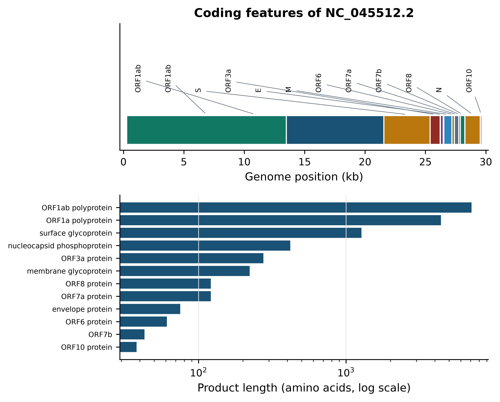
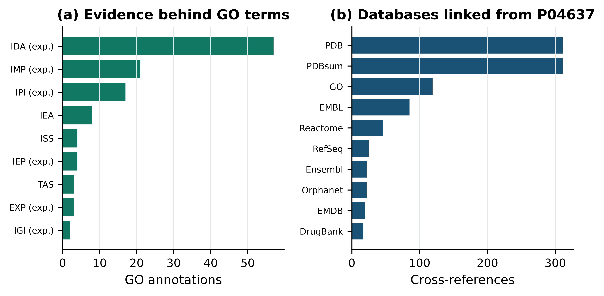

import sys; sys.path.insert(0, "..")
from pybfx import book_data, style, PALETTE
style()3 Biological databases and how to get data out of them
After working through this chapter you will be able to
- distinguish primary archives, curated knowledgebases and derived resources, and state how that distinction changes the weight you give a record
- decode an accession number, name the resource it belongs to, and explain what the digits after the full stop mean
- justify a choice between a RefSeq and a GenBank record, and between a Swiss-Prot and a TrEMBL entry
- dissect a GenBank feature table and a UniProtKB flat file with Biopython and extract named annotations, cross-references and evidence codes
- construct a query against the Entrez E-utilities and the UniProt and Ensembl REST interfaces, and handle pagination and rate limits courteously
- record the provenance of every file an analysis depends on, so that a result can be reproduced a year later
A colleague sends you a sequence and asks what it is. You paste it into a search box, and within a minute you have fifty answers. Some come from a genome that a consortium finished, polished and curated over a decade; some come from a fragment that a graduate student deposited in 2003 and never looked at again; and some come from an automatic annotation pipeline that has never been inspected by a human being. All fifty look identical on the screen. Knowing which is which is the difference between an analysis that holds up and one that quietly embarrasses you at review.
That is what this chapter is about. It is not a tour of websites. Websites change; the structural logic of public biological data does not. There are archives, which record what somebody submitted; there are knowledgebases, which record what curators believe after reading the literature; and there are derived resources, which compute something new from the first two. Each answers a different question, each fails in a different way, and reading a record without knowing which kind you are holding is the most common way that careful people reach wrong conclusions.
You will work with three bundled records throughout. The first is the SARS-CoV-2 reference genome in GenBank format (data/sequences/sars-cov-2-NC_045512.2.gb), whose feature table you will take apart feature by feature. The second is the full UniProtKB flat file for human p53 (data/proteins/P04637.txt), a 447 kB document containing 1,120 cross-references and more than 1,500 sequence features, which you will mine for evidence codes. The third is the book’s own data manifest (data/MANIFEST.tsv), which you will use as a model for recording provenance in your own projects. By the end you will have written a function that decodes any accession you are likely to meet, and a checksum routine that proves a file has not changed under you.
3.1 Setting up
Every Python chapter opens with the same setup chunk, which puts the book’s helper package on the import path and applies the plotting style.
3.2 Three kinds of resource
A primary archive stores submissions. GenBank, the European Nucleotide Archive (ENA), the DNA Data Bank of Japan (DDBJ), the Sequence Read Archive (SRA) and the Protein Data Bank (PDB) all work this way: a submitter uploads data and metadata, the archive performs format and consistency checks, assigns an accession, and from that moment the record is permanent. Archives do not correct biology. If a submitter annotated a pseudogene as a protein-coding gene, or recorded the wrong organism, the error stays in the archive until the submitter themselves revises it. The archive’s promise is narrow and valuable: this is exactly what was deposited, and it will still be here in twenty years.
A curated knowledgebase stores conclusions. UniProtKB/Swiss-Prot, RefSeq, ClinVar’s reviewed assertions and Reactome contain records that a human curator has assembled by reading primary literature, reconciling conflicting reports and attaching evidence to each statement. A curated record is an argument, not an observation. It can be wrong, but it is wrong in a way that someone is accountable for, and it usually tells you what the claim rests on.
A derived resource computes. STRING scores protein associations from co-expression, co-occurrence, text mining and imported interactions (Szklarczyk et al. 2022); the AlphaFold Protein Structure Database holds predicted structures rather than measured ones (Varadi et al. 2021); gnomAD aggregates allele frequencies across tens of thousands of exomes and genomes (Karczewski et al. 2020). Derived resources are often the most immediately useful thing on your screen and the most dangerous to quote without qualification, because the number you are reading is a model output whose assumptions live in a methods paper you have not read.
The practical consequence is a habit. Before you use a record, ask which of the three you are holding, and let the answer set the sentence you are allowed to write. From an archive you may write “a sequence deposited as X has property Y”. From a knowledgebase you may write “X is annotated as Y, on the evidence of Z”. From a derived resource you may write “X is predicted to be Y by method M”. Those three sentences are not interchangeable, and reviewers notice.
The INSDC and what mirroring means
GenBank, ENA and DDBJ form the International Nucleotide Sequence Database Collaboration (INSDC) (Arita, Karsch-Mizrachi, and Cochrane 2020). They exchange new and updated records daily, so a sequence submitted to any one of them appears in all three within about 24 hours, under the same accession. The record content is the same; the presentation is not. GenBank shows you a flat file, ENA shows you an XML-or-flat-file service with a different browser, and DDBJ a third. A paper citing an ENA accession and a paper citing the same GenBank accession are citing the same data. Raw reads behave the same way: SRA, ENA and DDBJ’s DRA mirror each other.
3.3 Accessions, versions and what the dot means
Readers lose days to accession numbers, usually by assuming that two strings that look alike mean alike. They do not. The prefix tells you which resource minted the identifier and, in the case of RefSeq, how the record was produced; the digits after the full stop are a version, but the thing being versioned differs between resources.
The RefSeq prefixes are worth memorising because they encode provenance directly. NC_ is a complete genomic molecule that has been curated; NM_ and NP_ are a curated messenger RNA and its protein product; XM_ and XP_ are the same two things produced by an automatic annotation pipeline with no human review (Tatusova et al. 2016). The difference between NM_000546 and a hypothetical XM_ record for the same locus is the difference between a transcript a curator vouched for and a transcript a program proposed. Genome assemblies carry two parallel accessions: GCA_ is the GenBank assembly, exactly as the submitting group built it, and GCF_ is the RefSeq copy of that assembly, with NCBI’s own annotation attached. The underlying contigs are usually identical; the gene models frequently are not.
The following function encodes those rules so that you can check an identifier instead of guessing at it.
import re
ACCESSION_PATTERNS = [
(r"^NC_\d+", "RefSeq complete genomic molecule, curated"),
(r"^NM_\d+", "RefSeq messenger RNA, curated"),
(r"^NP_\d+", "RefSeq protein, curated"),
(r"^XM_\d+", "RefSeq messenger RNA, predicted by automated annotation"),
(r"^XP_\d+", "RefSeq protein, predicted by automated annotation"),
(r"^GCF_\d+", "RefSeq genome assembly"),
(r"^GCA_\d+", "GenBank (INSDC) genome assembly"),
(r"^ENS[A-Z]*G\d{11}", "Ensembl gene"),
(r"^ENS[A-Z]*T\d{11}", "Ensembl transcript"),
(r"^rs\d+", "dbSNP variant"),
(r"^[OPQ][0-9][A-Z0-9]{3}[0-9]$", "UniProtKB accession"),
(r"^[A-NR-Z][0-9]([A-Z][A-Z0-9]{2}[0-9]){1,2}$", "UniProtKB accession"),
(r"^[0-9][A-Za-z0-9]{3}$", "PDB entry"),
(r"^[A-Z]{1,2}\d{5,6}", "INSDC nucleotide, author-submitted"),
]
def describe_accession(accession):
"""Name the resource an accession belongs to and report its version."""
stem, _, version = accession.partition(".")
for pattern, meaning in ACCESSION_PATTERNS:
if re.match(pattern, stem):
return f"{meaning}, " + (f"version {version}" if version else "unversioned")
return "unrecognised identifier"Running it over a set of identifiers drawn from the datasets used in this book shows how much information a well-formed accession carries before you have fetched anything at all.
examples = ["NC_045512.2", "NM_000546.6", "NP_000537.3", "XM_011525846.3",
"GCF_000027325.1", "GCA_000001405.29", "P04637",
"ENSG00000141510", "1TUP", "rs28934578", "MN908947.3"]
for accession in examples:
print(f"{accession:<17} {describe_accession(accession)}")
#> NC_045512.2 RefSeq complete genomic molecule, curated, version 2
#> NM_000546.6 RefSeq messenger RNA, curated, version 6
#> NP_000537.3 RefSeq protein, curated, version 3
#> XM_011525846.3 RefSeq messenger RNA, predicted by automated annotation, version 3
#> GCF_000027325.1 RefSeq genome assembly, version 1
#> GCA_000001405.29 GenBank (INSDC) genome assembly, version 29
#> P04637 UniProtKB accession, unversioned
#> ENSG00000141510 Ensembl gene, unversioned
#> 1TUP PDB entry, unversioned
#> rs28934578 dbSNP variant, unversioned
#> MN908947.3 INSDC nucleotide, author-submitted, version 3The last line repays attention. MN908947.3 is the author-submitted GenBank record for the Wuhan-Hu-1 isolate; NC_045512.2 is the RefSeq record derived from it. They contain the same 29,903 bases. They are not the same record, they have separate version histories, and a methods section that cites one when the analysis used the other is wrong in a way that is tedious to correct later.
A version is not an afterthought
The suffix after the full stop means different things in different resources, and all of them matter. In an INSDC or RefSeq nucleotide accession, the version increments whenever the sequence changes — NC_045512.1 and NC_045512.2 are different strings of bases. In a GCA_/GCF_ assembly accession, the suffix versions the whole assembly, so new scaffolding alone will increment it. Ensembl versions genes and transcripts separately from the assembly (ENST00000269305.9), and increments the suffix when the model changes. An unversioned accession such as NC_045512 silently resolves to whatever is current on the day you fetch it, which means an unversioned accession in a methods section does not specify the data you used. Always write the version.
3.4 The anatomy of a nucleotide record
A GenBank flat file has three parts: a header of record-level metadata, a feature table of annotations attached to coordinate ranges, and the sequence itself. Biopython’s SeqIO parses all three into a SeqRecord, from which the header fields come out as annotations.
from Bio import SeqIO
genome = SeqIO.read(book_data("sequences", "sars-cov-2-NC_045512.2.gb"), "genbank")
print(f"Accession: {genome.name}")
#> Accession: NC_045512
print(f"Version: {genome.id}")
#> Version: NC_045512.2
print(f"Molecule: {len(genome.seq):,} bp, "
f"{genome.annotations['molecule_type']}, {genome.annotations['topology']}")
#> Molecule: 29,903 bp, ss-RNA, linear
print(f"Updated: {genome.annotations['date']}")
#> Updated: 18-JUL-2020
print(f"Keywords: {genome.annotations['keywords']}")
#> Keywords: ['RefSeq']
print(f"Project: {genome.dbxrefs}")
#> Project: ['BioProject:PRJNA485481']
print(f"Lineage: {' > '.join(genome.annotations['taxonomy'][-4:])}")
#> Lineage: Orthocoronavirinae > Betacoronavirus > Sarbecovirus > Betacoronavirus pandemicumThree of those fields are already doing work. The keyword RefSeq confirms this is the curated copy rather than the submitted one. The DBLINK field points at BioProject PRJNA485481, which is the umbrella record that ties the genome to the submission it came from — following project identifiers is often the fastest route from a sequence back to the study that produced it. And the date is the date of the record, not of the sample: this record was last updated in July 2020, which is a fact about curation, not about the virus.
The feature table is where biology lives. Each feature has a type, a location and a set of qualifiers.
from collections import Counter
for feature_type, count in Counter(f.type for f in genome.features).most_common():
print(f"{feature_type:>12} {count}")
#> mat_peptide 26
#> CDS 12
#> gene 11
#> stem_loop 5
#> source 1
#> 5'UTR 1
#> 3'UTR 1Eleven gene features but twelve CDS features is not a bug, and spotting that asymmetry is exactly the kind of reading this section is teaching. The extra coding sequence belongs to ORF1a, which shares a gene feature with ORF1ab because the two products come from the same transcript: a ribosomal frameshift partway along produces either the short or the long polyprotein. The feature table encodes that explicitly as a joined location.
coding_sequences = [f for f in genome.features if f.type == "CDS"]
for feature in coding_sequences[:5]:
gene = feature.qualifiers["gene"][0]
segments = " + ".join(f"{int(p.start) + 1}..{int(p.end)}"
for p in feature.location.parts)
protein = feature.qualifiers["protein_id"][0]
print(f"{gene:<7} {protein:<16} {segments:<26} "
f"{len(feature.qualifiers['translation'][0]):>5} aa")
#> ORF1ab YP_009724389.1 266..13468 + 13468..21555 7096 aa
#> ORF1ab YP_009725295.1 266..13483 4405 aa
#> S YP_009724390.1 21563..25384 1273 aa
#> ORF3a YP_009724391.1 25393..26220 275 aa
#> E YP_009724392.1 26245..26472 75 aaThe first row shows the joined location 266..13468 + 13468..21555. Those two intervals overlap at position 13468, which is the hallmark of a programmed −1 ribosomal frameshift rather than a splice junction: the ribosome slips back one base and continues in a new reading frame, so one base is read twice. A tool that assumes a join() always means splicing will translate this feature incorrectly. Reading the location, rather than trusting a start and an end coordinate, is what prevents that.
Features other than CDS carry annotation that is easy to overlook. The 26 mat_peptide features record the individual non-structural proteins that proteases cut out of the ORF1ab polyprotein, and they are the only place in the record where nsp12, the RNA-dependent RNA polymerase, appears as its own entity.
mature_peptides = [f for f in genome.features if f.type == "mat_peptide"]
for feature in mature_peptides[:4]:
product = feature.qualifiers["product"][0]
print(f"{product:<24} {int(feature.location.start) + 1:>6}..{int(feature.location.end)}")
#> leader protein 266..805
#> nsp2 806..2719
#> nsp3 2720..8554
#> nsp4 8555..10054
print(f"... {len(mature_peptides)} mature peptides in total")
#> ... 26 mature peptides in totalFigure 3.1 draws the coding features on the genome and compares the lengths of their products, which is a useful first look at any annotated sequence: it shows at a glance how the annotation is distributed and whether anything is implausibly short or long.
import matplotlib.pyplot as plt
genome_kb = len(genome.seq) / 1000
fig, (ax_map, ax_len) = plt.subplots(2, 1, figsize=(6.5, 5.2),
gridspec_kw={"height_ratios": [1, 1.3]})
label_positions = [genome_kb * (i + 0.5) / len(coding_sequences)
for i in range(len(coding_sequences))]
for i, feature in enumerate(coding_sequences):
start, end = int(feature.location.start) / 1000, int(feature.location.end) / 1000
ax_map.broken_barh([(start, end - start)], (0.0, 0.25),
facecolors=PALETTE[i % len(PALETTE)], edgecolor="white")
ax_map.annotate(feature.qualifiers["gene"][0], xy=((start + end) / 2, 0.26),
xytext=(label_positions[i], 0.45), ha="center", va="bottom",
fontsize=6.5, rotation=90,
arrowprops=dict(arrowstyle="-", linewidth=0.5, color="#5D6D7E"))
ax_map.set(ylim=(-0.05, 1.05), yticks=[], xlim=(-0.3, genome_kb + 0.3),
xlabel="Genome position (kb)", title="Coding features of NC_045512.2")
ax_map.grid(False)
products = [f.qualifiers["product"][0] for f in coding_sequences]
lengths = [len(f.qualifiers["translation"][0]) for f in coding_sequences]
order = sorted(range(len(coding_sequences)), key=lambda i: lengths[i])
ax_len.barh([products[i] for i in order], [lengths[i] for i in order], color=PALETTE[0])
ax_len.set(xscale="log", xlabel="Product length (amino acids, log scale)")
ax_len.tick_params(axis="y", labelsize=6.5)
ax_len.grid(axis="y", visible=False)
fig.tight_layout()
The lower panel makes the compositional economy of an RNA virus visible: two polyproteins account for most of the coding capacity, the structural proteins occupy the 3’ third, and a set of accessory proteins of 38 to 275 amino acids is packed into the remaining space. The upper panel shows why genome browsers exist — at this density, a table of coordinates is unreadable and a picture is not.
3.5 The anatomy of a protein record
UniProtKB is one database in two sections (Bateman et al. 2022). Swiss-Prot entries have been read, assembled and signed off by a curator; TrEMBL entries are translations of coding sequences that have been annotated automatically and never reviewed. There are roughly six hundred thousand of the former and more than two hundred million of the latter. Every analysis you run against “all of UniProt” is therefore dominated by machine annotation unless you filter, which is what the reviewed:true term in a UniProt query does.
What manual curation buys is best seen by opening a curated record and counting. Biopython parses the flat-file format with Bio.SwissProt (Cock et al. 2009).
from Bio import SwissProt
with open(book_data("proteins", "P04637.txt")) as handle:
p53 = SwissProt.read(handle)
print(f"Entry name: {p53.entry_name} ({p53.data_class})")
#> Entry name: P53_HUMAN (Reviewed)
print(f"Primary accession: {p53.accessions[0]} "
f"(+{len(p53.accessions) - 1} secondary accessions)")
#> Primary accession: P04637 (+26 secondary accessions)
print(f"Gene: {p53.gene_name[0]['Name']}")
#> Gene: TP53
print(f"Length: {p53.sequence_length} aa")
#> Length: 393 aa
print(f"Created: {p53.created[0]}; annotation updated {p53.annotation_update[0]}")
#> Created: 13-AUG-1987; annotation updated 02-SEP-2026
print(f"Literature: {len(p53.references)} cited references")
#> Literature: 238 cited references
print(f"Cross-references: {len(p53.cross_references)}")
#> Cross-references: 1120
print(f"Sequence features: {len(p53.features)}")
#> Sequence features: 1523The data class reads Reviewed, which is how a Swiss-Prot entry identifies itself; a TrEMBL entry would read Unreviewed. The 26 secondary accessions are the fossil record of entries that were later merged into this one, and they still resolve, which is why an old accession in an old paper does not break. The counts at the bottom are the curation dividend: 238 papers read, 1,120 links to other resources, and over 1,500 annotated features on a protein of just 393 amino acids.
Those features are typed, and the types matter. CHAIN marks the mature polypeptide, DNA_BIND a DNA-binding region, REGION a functional or structural segment, VARIANT a known sequence variant, MOD_RES a modified residue, and HELIX/STRAND/TURN secondary structure transferred from solved structures.
feature_counts = Counter(feature.type for feature in p53.features)
for feature_type, count in feature_counts.most_common(8):
print(f"{feature_type:>10} {count}")
#> VARIANT 1363
#> MUTAGEN 38
#> MOD_RES 30
#> HELIX 21
#> REGION 20
#> STRAND 17
#> TURN 7
#> CROSSLNK 6Most of the 1,523 features are variants, which tells you something about p53 specifically — it is the most frequently mutated gene in human cancer, and the curators have recorded the literature exhaustively. Pulling out the structural annotation gives the domain architecture that every p53 paper draws as a cartoon.
for feature in p53.features:
if feature.type in {"DNA_BIND", "MOTIF"} or (
feature.type == "REGION" and "Interaction" not in feature.qualifiers.get("note", "")):
note = feature.qualifiers.get("note", feature.type)
print(f"{int(feature.location.start) + 1:>4}-{int(feature.location.end):<4} {note}")
#> 102-292 DNA_BIND
#> 1-44 Transcription activation (acidic)
#> 50-96 Disordered
#> 100-300 Required for interaction with ZNF385A
#> 113-236 Required for interaction with FBXO42
#> 282-325 Disordered
#> 325-356 Oligomerization
#> 351-393 Disordered
#> 368-387 Basic (repression of DNA-binding)
#> 17-25 TADI
#> 48-56 TADII
#> 305-321 Bipartite nuclear localization signal
#> 339-350 Nuclear export signal
#> 370-372 [KR]-[STA]-K motifThe DNA-binding region at residues 102–292 is the one to remember: it is where the great majority of cancer-associated missense mutations fall, and it is the domain captured in the bundled structure 1tup.pdb (Cho et al. 1994). Counting the variants that the curators flagged as germline Li-Fraumeni syndrome alleles makes the point quantitatively.
variants = [f for f in p53.features if f.type == "VARIANT"]
lfs = [f for f in variants if "LFS" in f.qualifiers.get("note", "")]
in_dna_binding = [f for f in variants if 101 <= int(f.location.start) < 292]
print(f"annotated variants: {len(variants)}")
#> annotated variants: 1363
print(f"flagged as Li-Fraumeni (LFS): {len(lfs)}")
#> flagged as Li-Fraumeni (LFS): 103
print(f"falling in the DNA-binding domain: {len(in_dna_binding)} "
f"({100 * len(in_dna_binding) / len(variants):.0f}%)")
#> falling in the DNA-binding domain: 1052 (77%)
print("\nexample:", lfs[0].qualifiers["note"][:96])
#>
#> example: P -> L (in LFS; germline mutation and in sporadic cancers; somatic mutation; dbSNP:rs534447939)Evidence codes, and why they are the most useful part of a record
Every functional statement in a curated entry carries an evidence tag. Gene Ontology (GO) annotations (Ashburner et al. 2000; Aleksander et al. 2023) attached to a UniProt entry each end in a three-letter code that says how the assignment was made. IDA means inferred from direct assay, IMP from mutant phenotype, IPI from physical interaction, IGI from genetic interaction and IEP from expression pattern; those are experimental. ISS means inferred from sequence similarity, TAS traceable author statement, and IEA inferred from electronic annotation with no curator involvement at all. An IEA annotation is a hypothesis; an IDA annotation is somebody’s figure.
Figure 3.2 shows the evidence profile of p53’s GO annotations alongside the resources the entry links out to.
EXPERIMENTAL = {"EXP", "IDA", "IPI", "IMP", "IGI", "IEP",
"HTP", "HDA", "HMP", "HGI", "HEP"}
go_annotations = [x for x in p53.cross_references if x[0] == "GO"]
code_counts = Counter(x[3].split(":")[0] for x in go_annotations)
database_counts = Counter(x[0] for x in p53.cross_references).most_common(10)
fig, (ax_evidence, ax_databases) = plt.subplots(1, 2, figsize=(6.6, 3.4))
ordered = sorted(code_counts.items(), key=lambda item: item[1])
ax_evidence.barh([f"{code} (exp.)" if code in EXPERIMENTAL else code
for code, _ in ordered], [n for _, n in ordered], color=PALETTE[1])
ax_evidence.set(xlabel="GO annotations", title="(a) Evidence behind GO terms")
ax_evidence.tick_params(axis="y", labelsize=7)
ax_evidence.grid(axis="y", visible=False)
ax_databases.barh([d for d, _ in database_counts][::-1],
[n for _, n in database_counts][::-1], color=PALETTE[0])
ax_databases.set(xlabel="Cross-references", title="(b) Databases linked from P04637")
ax_databases.tick_params(axis="y", labelsize=7)
ax_databases.grid(axis="y", visible=False)
fig.tight_layout()
experimental = sum(n for code, n in code_counts.items() if code in EXPERIMENTAL)
print(f"{experimental} of {len(go_annotations)} GO annotations "
f"({100 * experimental / len(go_annotations):.0f}%) rest on experimental evidence")
#> 104 of 119 GO annotations (87%) rest on experimental evidencePanel (a) is the argument for using Swiss-Prot in preference to a bulk download: 104 of this entry’s 119 GO annotations are experimental, and only eight are electronic inferences. Run the same count on a TrEMBL entry and almost everything will be IEA. Panel (b) shows the second thing curation buys, which is integration: the entry is simultaneously an index into 311 PDB structures, 46 Reactome pathways, 22 Orphanet disease records and 17 DrugBank compounds. This is why a UniProt accession is usually the best starting point for a protein-centred question, whatever the question is.
Read the evidence before you read the annotation
When a database tells you a protein does something, find the evidence tag before you quote the claim. In a UniProt web page the evidence appears as a small coloured icon beside each statement; in the flat file it is the ECO: term in the feature’s evidence qualifier or the three-letter code in a GO cross-reference. A function supported only by IEA or ISS is a lead to follow, not a result to build on.
3.6 Structures, genomes and the browser model
The Protein Data Bank is the archive of experimentally determined three-dimensional structures, now jointly managed as the worldwide PDB (Berman 2000; Burley et al. 2022). A PDB entry is a four-character code such as 1TUP and contains atomic coordinates together with the experimental conditions that produced them. Two attributes of a PDB entry govern how much you should trust any particular atom: the method (X-ray crystallography, nuclear magnetic resonance spectroscopy or cryo-electron microscopy) and, for crystal structures, the resolution. A 1.5 Å structure resolves individual side-chain positions; a 3.5 Å structure resolves the backbone and little else, and side-chain orientations in it are largely modelled rather than observed. The structural bioinformatics chapter takes this up in detail using the bundled 1tup.pdb and 1mbn.pdb files.
Ensembl takes a different approach from an archive (Cunningham et al. 2021). It is built around a genome assembly as a coordinate system, with every other kind of data — gene models, transcripts, regulatory features, variants, comparative alignments — attached to intervals on that assembly. This is the genome browser model, and it has one consequence that beginners trip over constantly: every coordinate is meaningful only with respect to an assembly. Position 7,676,154 on chromosome 17 is a different base in GRCh37 and in GRCh38. Ensembl labels each release with its assembly, and so must you.
A variant list, a BED file or a set of peak calls is therefore meaningless without the assembly it was called against, and converting between assemblies with a liftover tool is lossy: some intervals fail to map and a few map to the wrong place. Record the assembly name in the file, in the filename and in the methods section, and if you receive coordinates with no assembly stated, ask before you use them.
The browser model also explains the Ensembl identifier scheme. ENSG prefixes a gene, ENST a transcript, ENSP a protein and ENSE an exon, each with its own version suffix because a gene model can be revised without the gene being redefined. Species other than human carry a species code in the middle: ENSMUSG for mouse.
3.7 Specialised and derived resources
Beyond the general archives sit resources organised around one kind of question. You will not use all of them, but you need to know which one to reach for.
For human variation, dbSNP accessions every submitted variant with an rs identifier (Sherry 2001), and is a registry rather than an assessment: an rs number says a variant has been observed, not that it matters. ClinVar records clinical interpretations of variants, each with a submitter, a review status and a date (Landrum et al. 2017); its “review status” stars are the field you must read, because a one-star assertion from a single laboratory and a four-star expert-panel assertion are very different objects. The bundled data/variants/tp53_clinvar.vcf holds 3,888 ClinVar records across TP53 and is used in the clinical genomics chapter. Interpretation of a clinical variant follows the ACMG/AMP framework rather than a database lookup (Richards et al. 2015). OMIM is the long-running catalogue of Mendelian phenotypes and the genes behind them (Amberger et al. 2018), and remains the best narrative account of what is known about a disease gene.
For functional genomics data, GEO archives processed expression datasets with their experimental design (Barrett et al. 2012), while SRA and ENA archive the raw reads underneath. The division matters when you want to reanalyse something: GEO gives you the authors’ processed matrix, and the archives give you the reads you need in order to disagree with it.
For pathways and interactions, Reactome is a curated, peer-reviewed pathway knowledgebase (Milacic et al. 2023); KEGG organises molecular interaction networks into maps with their own identifier space (Kanehisa 2000); STRING scores functional associations and is explicitly a derived resource (Szklarczyk et al. 2022); and the Gene Ontology supplies the controlled vocabulary that most functional analysis depends on (Ashburner et al. 2000). The bundled data/networks/p53_string_network.tsv and data/annotation/human_go_annotations.tsv are drawn from the last two and are used in the systems biology chapter.
Human data carries obligations
Aggregate resources such as gnomAD publish allele frequencies precisely because individual-level human genomes cannot be published freely. Controlled-access repositories exist for the individual-level data, and access to them is granted for a stated purpose under a data access agreement that binds you personally. Downloading human genomic data because a URL happens to work is not consent, and the question of what you may do with it is legal as well as ethical. The chapter on ethical, legal and social issues sets out the framework; the obligation applies from the first file you download.
3.8 Programmatic access
Clicking is fine for one record and indefensible for a thousand. Every major resource exposes a programmatic interface, and learning two of them — NCBI’s Entrez E-utilities and the REST services at EMBL-EBI and Ensembl — covers most of what you will need (Sayers et al. 2021; Cantelli et al. 2020).
The code in this section is shown but not executed, because this book must build without a network connection and because a textbook that queried NCBI on every build would be a poor citizen. Every output shown below was captured from a real run of exactly the code above it, on 15 October 2026.
Entrez E-utilities
The E-utilities are a family of endpoints that share a query syntax. esearch turns a query into a list of internal unique identifiers (UIDs); esummary returns brief metadata for UIDs; efetch returns full records; and elink walks between databases. Biopython wraps all of them in Bio.Entrez, which also handles the XML parsing.
Queries use the same field-tagged syntax as the NCBI search boxes: term[field], combined with AND, OR and NOT. Common fields are [Organism], [Title], [Accession], [Gene] and the filter pseudo-field refseq[filter]. Building the query precisely is what keeps the result set small enough to be meaningful.
import os
from Bio import Entrez
# NCBI asks every automated client to identify itself; keeping the address in an
# environment variable keeps it out of the manuscript and out of version control.
Entrez.email = os.environ["NCBI_EMAIL"]
Entrez.tool = "practical-bioinformatics-textbook"
query = ('"Severe acute respiratory syndrome coronavirus 2"[Organism] '
'AND "complete genome"[Title] AND refseq[filter]')
with Entrez.esearch(db="nuccore", term=query, retmax=5) as handle:
search = Entrez.read(handle)
print("records matching:", search["Count"])
print("UIDs:", search["IdList"])
with Entrez.esummary(db="nuccore", id=",".join(search["IdList"])) as handle:
for summary in Entrez.read(handle):
print(f'{summary["AccessionVersion"]} {int(summary["Length"]):,} bp '
f'updated {summary["UpdateDate"]}')That code, run against NCBI on 15 October 2026, printed:
records matching: 1
UIDs: ['1798174254']
NC_045512.2 29,903 bp updated 2020/07/18Note that the UID is not the accession. Entrez identifies records internally by an integer; accessions are metadata on those records. esearch returns UIDs, efetch accepts either, and conflating the two is a common source of confusion when a script that worked yesterday returns nothing today.
Fetching the full record is one more call. The rettype and retmode pair chooses the format: gb/text for a GenBank flat file, fasta/text for FASTA, gb/xml for structured XML.
with Entrez.efetch(db="nuccore", id="NC_045512.2",
rettype="gb", retmode="text") as handle:
flat_file = handle.read()
print(f"retrieved {len(flat_file.splitlines())} lines")
print("\n".join(flat_file.splitlines()[:6]))The captured output of that run was:
retrieved 1192 lines
LOCUS NC_045512 29903 bp ss-RNA linear VRL 18-JUL-2020
DEFINITION Severe acute respiratory syndrome coronavirus 2 isolate Wuhan-Hu-1,
complete genome.
ACCESSION NC_045512
VERSION NC_045512.2
DBLINK BioProject: PRJNA485481which is byte-for-byte the header of the bundled file you parsed earlier — the point being that book_data("sequences", "sars-cov-2-NC_045512.2.gb") and this call return the same record, and the bundled copy is there so that the book’s results do not depend on a server being up.
elink is the function that makes Entrez worth learning, because it traverses the relationships between databases. Asking for the RefSeq transcripts of a gene is one call rather than a scraping exercise.
with Entrez.esearch(db="gene", term="TP53[sym] AND Homo sapiens[orgn]") as handle:
gene_hits = Entrez.read(handle)
gene_uid = gene_hits["IdList"][0]
print("Gene UID for human TP53:", gene_uid)
with Entrez.elink(dbfrom="gene", db="nuccore", id=gene_uid,
linkname="gene_nuccore_refseqrna") as handle:
links = Entrez.read(handle)
transcripts = [link["Id"] for link in links[0]["LinkSetDb"][0]["Link"]]
print("RefSeq transcript records linked to that gene:", len(transcripts))The real run returned:
Gene UID for human TP53: 7157
RefSeq transcript records linked to that gene: 26Twenty-six RefSeq transcripts for one gene is itself a lesson: “the TP53 sequence” is not a well-defined object, and an analysis that silently picks the first one is making a choice it has not declared.
Rate limits are enforced, and politeness is cheap
NCBI permits three E-utilities requests per second without an API key and ten with one; an API key is free from your NCBI account and is passed as Entrez.api_key. Exceeding the limit returns HTTP 429, and sustained abuse gets your institution’s address blocked, which is a conversation nobody wants to have. Beyond the hard limit there are three courtesy rules: identify yourself with Entrez.email and Entrez.tool; run large jobs outside United States business hours; and post batches of identifiers with the history server (usehistory="y") instead of issuing one request per record. The same principles apply to every public API in this chapter.
UniProt and Ensembl REST
REST services answer with a document whose format you choose through a parameter or an Accept header, and they take ordinary URL query strings. The UniProt search endpoint accepts the same query language as the website, plus a fields parameter that selects columns and a format parameter that chooses between JSON, TSV, FASTA and the flat-file format.
import requests
UNIPROT = "https://rest.uniprot.org/uniprotkb/search"
response = requests.get(UNIPROT, timeout=30, params={
"query": "(gene:TP53 OR gene:TP63 OR gene:TP73) "
"AND organism_id:9606 AND reviewed:true",
"fields": "accession,id,gene_primary,length",
"format": "tsv", "size": 10})
response.raise_for_status()
print("total matches:", response.headers["x-total-results"])
print(response.text.strip())The captured output was:
total matches: 3
Entry Entry Name Gene Names (primary) Length
P04637 P53_HUMAN TP53 393
O15350 P73_HUMAN TP73 636
Q9H3D4 P63_HUMAN TP63 680Requesting a column list and a tab-separated format, rather than downloading full entries and parsing them, is the habit worth forming: it is faster for you and much cheaper for the service.
Large result sets are paginated, and UniProt paginates by returning a Link header pointing at the next page rather than by accepting a page number. The requests library parses that header into response.links, so a loop that follows next until it is absent retrieves everything without you having to compute offsets.
response = requests.get("https://rest.uniprot.org/uniprotkb/search", timeout=60,
params={"query": "organism_id:9606 AND reviewed:true",
"fields": "accession", "format": "tsv", "size": 500})
print("total matches:", response.headers["x-total-results"])
print("rows in this page:", len(response.text.strip().splitlines()) - 1)
print("next page:", response.links["next"]["url"][:96], "...")total matches: 20431
rows in this page: 500
next page: https://rest.uniprot.org/uniprotkb/search?format=tsv&fields=accession&query=organism_id%3A9606%2 ...That total, 20,431 reviewed human proteins, is the same number as the row count of the bundled data/annotation/human_go_annotations.tsv, which was built from this endpoint — a reminder that bundled data is a snapshot of a service, and that the number will drift as curation continues.
Ensembl’s REST service is organised around the browser model: endpoints are named for the operation (/lookup/symbol, /sequence/id, /overlap/region, /homology/symbol) and return JSON by default. It returns its rate-limit state in response headers, which is the pattern to look for in any API you have not used before.
ENSEMBL = "https://rest.ensembl.org"
headers = {"Content-Type": "application/json"}
gene = requests.get(f"{ENSEMBL}/lookup/symbol/homo_sapiens/TP53",
headers=headers, params={"expand": 1}, timeout=60)
gene.raise_for_status()
record = gene.json()
print(f'{record["id"]} chromosome {record["seq_region_name"]}:'
f'{record["start"]}-{record["end"]} strand {record["strand"]}')
print("assembly:", record["assembly_name"], "| transcripts:", len(record["Transcript"]))
canonical = next(t for t in record["Transcript"] if t["is_canonical"])
print("canonical transcript:", canonical["id"], canonical["biotype"])
print("remaining request allowance:", gene.headers["X-RateLimit-Remaining"],
"of", gene.headers["X-RateLimit-Limit"])The real run printed:
ENSG00000141510 chromosome 17:7661779-7687546 strand -1
assembly: GRCh38 | transcripts: 40
canonical transcript: ENST00000269305 protein_coding
remaining request allowance: 54996 of 55000Three things in that output are worth taking away. The gene is on the minus strand, so its transcription start site is at the higher coordinate — a frequent source of off-by-a-gene errors when extracting promoters. The assembly is stated in the response, so there is no excuse for not recording it. And Ensembl’s quota, 55,000 requests per hour, is generous but finite; a script that loops over 200,000 genes one at a time will exhaust it, which is why the service also offers POST endpoints that accept a list of identifiers in a single request.
Every one of these calls can fail. Write the retrieval code so that it says so rather than writing a truncated file: check response.status_code or call raise_for_status(), set a timeout, and back off and retry on HTTP 429 and 5xx rather than hammering a service that is already struggling.
3.9 Provenance, or how to still be able to reproduce this next year
Databases are living objects. RefSeq re-annotates, UniProt merges entries, ClinVar reclassifies variants, Ensembl releases a new gene set every quarter. None of that is a problem until you try to reproduce a result and cannot, at which point it is the whole problem. The remedy is to record, for every file an analysis touches, four things: the accession, the version, the date of retrieval and a checksum of the bytes you actually have.
This book practises what it is recommending. Every bundled file is listed in data/MANIFEST.tsv with its size, its SHA-256 digest, its source and a description.
import csv
with open(book_data("MANIFEST.tsv")) as handle:
manifest = list(csv.DictReader(handle, delimiter="\t"))
print(f"{len(manifest)} files recorded")
#> 21 files recorded
entry = next(row for row in manifest if row["path"].endswith("NC_045512.2.gb"))
for field in ("path", "bytes", "source", "sha256"):
print(f"{field:>7}: {entry[field]}")
#> path: sequences/sars-cov-2-NC_045512.2.gb
#> bytes: 78517
#> source: NCBI Nucleotide NC_045512.2
#> sha256: 87744b176aa9ce71350c8becf0d062950dbc485a59766fcfe723ec859f6b6d5cThe digest is what turns provenance from an assertion into a check. Recomputing it takes three lines, and doing so at the start of a pipeline catches the truncated download, the file that was edited in a text editor and saved with different line endings, and the colleague who replaced a file in place without telling you.
import hashlib
from pathlib import Path
def sha256_of(path):
"""Return the SHA-256 digest of a file, read in chunks so that large files fit."""
digest = hashlib.sha256()
with open(path, "rb") as handle:
for block in iter(lambda: handle.read(1 << 20), b""):
digest.update(block)
return digest.hexdigest()
checked = 0
for row in manifest:
path = Path(book_data(*row["path"].split("/")))
if sha256_of(path) != row["sha256"]:
print(f"MISMATCH: {row['path']}")
else:
checked += 1
print(f"{checked} of {len(manifest)} bundled files match their recorded digest")
#> 21 of 21 bundled files match their recorded digestA pipeline that begins with that loop fails loudly on the day a file changes, which is far better than succeeding quietly on the wrong data. The same idea scales up: the FAIR principles — findable, accessible, interoperable, reusable — formalise it as community practice (Wilkinson et al. 2016), and the reproducibility literature is unanimous that recording versions is cheaper than reconstructing them (Sandve et al. 2013).
The habit this builds is small. For every external file, write down the resource, the accession with its version, the retrieval date and the digest, in a plain text file beside the data, and record the exact query string or URL alongside them so that the retrieval itself can be repeated. The difference it makes is not small. A methods section that says “sequences were downloaded from NCBI” is not reproducible; one that says “the RefSeq record NC_045512.2 was retrieved from NCBI Nucleotide on 15 October 2026 (SHA-256 87744b17…)” is.
3.10 Summary
- Resources divide into primary archives, which record submissions; curated knowledgebases, which record conclusions with evidence; and derived resources, which compute. The kind of resource determines the sentence you are entitled to write about the record.
- INSDC mirroring means GenBank, ENA and DDBJ hold the same records under the same accessions, so a citation to one is a citation to all three.
- An accession prefix encodes provenance.
NM_/NP_are curated,XM_/XP_are machine-predicted,GCA_is a submitted assembly andGCF_is the RefSeq copy of it with NCBI’s annotation. - The digits after the full stop are a version, and what is versioned differs between resources. An unversioned accession does not identify data.
- A GenBank feature table is read feature by feature, not by its coordinates alone: joined locations, mature-peptide features and gene-to-CDS asymmetries all carry biology that a coordinate pair discards.
- Swiss-Prot entries are reviewed and TrEMBL entries are not, and the difference shows up directly in the evidence codes attached to their annotations.
- Evidence codes are the first thing to read in a functional annotation.
IDAandIMPare experiments;IEAandISSare hypotheses. - Programmatic access is the normal way to work. Construct a precise query, request only the fields you need, follow pagination links, respect rate limits, identify yourself, and handle failures explicitly.
- Record accession, version, retrieval date and checksum for every file. A verification loop at the start of a pipeline costs seconds and prevents the class of error that is hardest to detect after the fact.
3.11 Exercises
- Without running code, say what each of these identifies and which resource minted it:
NP_000537.3,GCA_000001405.29,ENST00000269305.9,Q9H3D4,rs1042522. - Extend
describe_accessionso that it also recognises Gene Expression Omnibus series (GSEfollowed by digits) and SRA run accessions (SRR,ERRorDRRfollowed by digits), then confirm that it still classifies every example in Section 3.3 correctly. - Using the bundled GenBank record, compute the total number of bases covered by
CDSfeatures and express it as a percentage of the genome. Why is the answer greater than you might expect from the gene count alone? - The bundled record
data/sequences/TP53-NM_000546.6.gbis a transcript rather than a genome. Parse it, list its feature types, extract theCDSfeature, translate it with Biopython and check that the result matches thetranslationqualifier already in the record. - From the bundled UniProt flat file, count how many
MOD_RESfeatures there are and tabulate the modification types recorded in their notes. What does the distribution suggest about how p53 is regulated? - Figure 3.2 panel (a) shows that most GO annotations on P04637 are experimental. A colleague proposes to measure “annotation quality” across a proteome by computing this experimental fraction for every entry. Give two reasons why that measure would be misleading as a comparison between proteins, and one situation in which it would nonetheless be informative.
- Write a function that takes the manifest row for a file and emits a four-line provenance block suitable for pasting into a methods section, containing the source, the path, the first 16 characters of the digest and today’s date.
- The bundled
data/proteins/P04637.fastaand thesequenceattribute of the parsed flat file should agree. Check that they do, and explain why a mismatch between a FASTA download and a flat-file download of the same accession would be a serious problem rather than a formatting nuisance. - An
IEAGO annotation states that a protein has protein kinase activity. Write the sentence you would put in a paper if that were your only evidence, and then write the sentence you could use if anIDAannotation said the same thing. Explain what experiment would move the claim from the first sentence to the second.
3.12 Solutions
Solutions
1. NP_000537.3 is a curated RefSeq protein, version 3, from NCBI. GCA_000001405.29 is the GenBank (INSDC) human genome assembly, version 29. ENST00000269305.9 is an Ensembl transcript, model version 9. Q9H3D4 is a UniProtKB accession (it is p63). rs1042522 is a dbSNP variant identifier — in this case the common p53 codon 72 polymorphism.
2. Adding two patterns is enough; because the new patterns are anchored at the start of the string they cannot collide with the existing ones.
ACCESSION_PATTERNS.extend([
(r"^GSE\d+", "GEO series"),
(r"^[SED]RR\d+", "INSDC sequencing run"),
])
for accession in ["GSE18508", "SRR1039508", "NM_000546.6", "GCF_000027325.1"]:
print(f"{accession:<13} {describe_accession(accession)}")
#> GSE18508 GEO series, unversioned
#> SRR1039508 INSDC sequencing run, unversioned
#> NM_000546.6 RefSeq messenger RNA, curated, version 6
#> GCF_000027325.1 RefSeq genome assembly, version 13. The coding fraction exceeds 100% of the sum of the gene lengths because ORF1a and ORF1ab overlap almost completely, and several accessory genes overlap one another.
covered = set()
for feature in coding_sequences:
for part in feature.location.parts:
covered.update(range(int(part.start), int(part.end)))
print(f"distinct coding bases: {len(covered):,} "
f"({100 * len(covered) / len(genome.seq):.1f}% of the genome)")
#> distinct coding bases: 29,260 (97.8% of the genome)
print(f"sum of CDS lengths: {sum(len(f.location) for f in coding_sequences):,} bp")
#> sum of CDS lengths: 42,483 bp4. The translated CDS and the stored translation agree, which is the check worth running whenever you extract a coding sequence yourself.
transcript = SeqIO.read(book_data("sequences", "TP53-NM_000546.6.gb"), "genbank")
print("feature types:", sorted({f.type for f in transcript.features}))
#> feature types: ['CDS', 'exon', 'gene', 'misc_feature', 'polyA_site', 'regulatory', 'source']
cds_feature = next(f for f in transcript.features if f.type == "CDS")
translated = cds_feature.extract(transcript.seq).translate(to_stop=True)
stored = cds_feature.qualifiers["translation"][0]
print(f"translated {len(translated)} aa; stored {len(stored)} aa; "
f"identical: {str(translated) == stored}")
#> translated 393 aa; stored 393 aa; identical: True5. Phosphorylation dominates, with acetylation second; both are reversible marks placed by signalling enzymes, which is consistent with p53 being controlled largely after translation rather than at the level of transcription.
modifications = Counter()
for feature in p53.features:
if feature.type == "MOD_RES":
note = feature.qualifiers.get("note", "")
modifications[note.split(";")[0]] += 1
print(f"{sum(modifications.values())} MOD_RES features")
#> 30 MOD_RES features
for modification, count in modifications.most_common():
print(f" {modification:<26} {count}")
#> Phosphoserine 10
#> N6-acetyllysine 6
#> Phosphothreonine 3
#> N6,N6-dimethyllysine 3
#> N6-methyllysine 3
#> N6-lactoyllysine 2
#> Symmetric dimethylarginine 2
#> Omega-N-methylarginine 16. Two reasons it misleads: first, the fraction depends on how much attention a protein has received rather than on how well it is understood, so a heavily studied protein and an obscure one are not comparable; second, electronic annotations are added in bulk to every entry by pipelines, so an entry with few experimental annotations may simply have a large IEA denominator. It is informative within a single protein over time, or when comparing the same protein’s entry between Swiss-Prot and TrEMBL, because then the denominator is controlled.
7. The block below is deliberately plain text so that it can be pasted anywhere.
from datetime import date
def provenance_block(row):
"""Format one manifest row as a four-line provenance record."""
return (f"source: {row['source']}\n"
f"file: {row['path']} ({int(row['bytes']):,} bytes)\n"
f"sha256: {row['sha256'][:16]}...\n"
f"retrieved: as bundled; verified {date.today().isoformat()}")
print(provenance_block(entry))
#> source: NCBI Nucleotide NC_045512.2
#> file: sequences/sars-cov-2-NC_045512.2.gb (78,517 bytes)
#> sha256: 87744b176aa9ce71...
#> retrieved: as bundled; verified 2026-10-168. They agree. A mismatch would mean the two download routes disagree about what the accession contains, which would make every coordinate-based annotation on the record ambiguous — a residue number is only meaningful relative to a sequence, so two sequences under one accession would invalidate every feature, variant and structure mapping that cites it.
fasta = SeqIO.read(book_data("proteins", "P04637.fasta"), "fasta")
print(f"FASTA: {len(fasta.seq)} aa; flat file: {p53.sequence_length} aa; "
f"identical: {str(fasta.seq) == p53.sequence}")
#> FASTA: 393 aa; flat file: 393 aa; identical: True9. With only IEA evidence: “X is predicted to have protein kinase activity by electronic annotation (GO:0004672, IEA).” With IDA evidence: “X has protein kinase activity, demonstrated by direct assay (GO:0004672, IDA).” Moving between them requires an experiment in which the purified protein transfers phosphate to a substrate — typically an in vitro kinase assay with a radiolabelled or phospho-specific readout, with a catalytically dead mutant as the control.
3.13 Further reading
- Sayers et al. (2021) is the annual overview of the NCBI resources and is the quickest way to find out which database holds the kind of record you need.
- Cantelli et al. (2020) does the same job for the EMBL-EBI services, including ENA, UniProt and the proteomics and expression archives.
- Bateman et al. (2022) explains how Swiss-Prot curation is actually carried out, which is the background you need in order to judge how much an annotation is worth.
- Cunningham et al. (2021) describes the Ensembl data model and release cycle; read it before you compare results computed against two different Ensembl releases.
- Ashburner et al. (2000) is the paper that introduced the Gene Ontology, and the clearest statement of why a controlled vocabulary was necessary.
- Landrum et al. (2017) sets out ClinVar’s submission and review model, including what the review-status stars mean in practice.
- Wilkinson et al. (2016) states the FAIR principles, which are the standard that funders and journals increasingly expect data management plans to meet.
-
Cock et al. (2009) is the Biopython reference;
Bio.SeqIO,Bio.SwissProtandBio.Entrez, all used in this chapter, are documented in its tutorial.